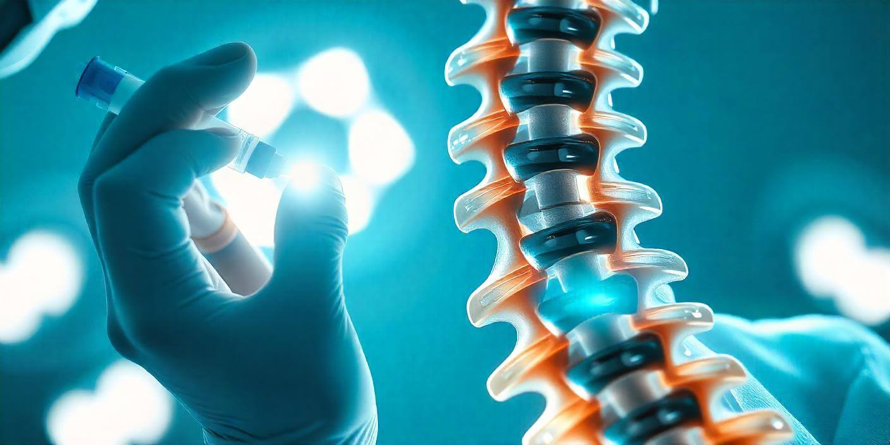

Spine
Back and neck procedures
- Epidural steroid injections Lumbar, cervical, thoracic, and caudal injections, including translaminar and transforaminal approaches.
- Facet injections Targeted treatment for joints along the spine that can drive neck or back pain.
- Sacroiliac joint injections Care for pain that centers where the spine meets the pelvis.
- Radiofrequency ablation A longer-lasting option for certain joint-related spine pain after a successful block.
- Spinal cord stimulators An implanted option Dr. Pasi may discuss when other care has not been enough. Placement is coordinated with a surgeon when surgery is the right next step.